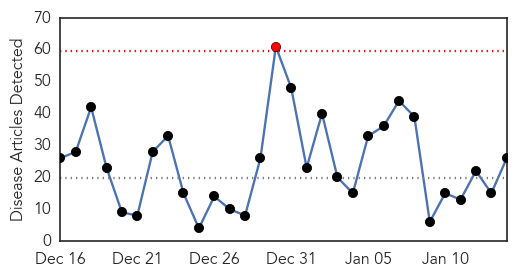
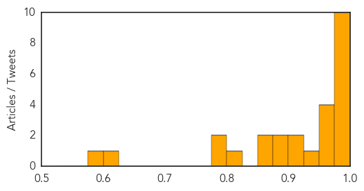

Influenza
30-Day Web Trend
1 alerts, 0 warnings

30-Day Twitter Trend
1 alerts, 0 warnings

Article Locations

Article Confidences
Top Articles:
- 0.997
- Flu shot lowers risk of rare side-effect in most seasons for most people
- 0.997
- Knox Health Department offers guidance for flu sufferers
- 0.994
- Flu shot reduces risk of rare Guillain-Barré Syndrome in most cases, study finds
- 0.993
- Death Toll Rises As Four More Die In Allegheny
- 0.991
- Flu Widespread in Rhode Island, Vaccine 'Bad Match' for the...
- 0.990
- Mississippi Public Broadcasting
- 0.989
- Northwest Prepares for Flu Season
- 0.989
- Influenza making its presence known in southwest Nebraska
- 0.988
- Flu keeps central Wisconsin clinics busy
- 0.982
- Health officials urge sick people to stay home as flu epidemic h
- 0.975
- Los Angeles County reports spot shortages of flu meds
- 0.969
- Granite Staters urged to get vaccinated against flu
- 0.960
- State health commissioner wants more Hoosiers to get the flu shot
- 0.954
- S. Korea confirms case of bird flu – The Korea Times
- 0.938
- Wisconsin 2-year-old dies from flu
- 0.918
- Universal flu vaccine on the horizon, thanks to antibodies
- 0.918
- Universal vaccine against flu may be on the horizon, say researchers
- 0.892
- Avian Flu Scan for Jan 14, 2015
- 0.889
- No new avian flu cases reported in province
- 0.871
- Have the Flu? Health Officials Urge You to Stay Home
- 0.865
- Flu epidemic prompts Valley hospitals to declare internal disast
- 0.801
- Poultry industry optimistic and on the mend
- 0.794
- Pseudorabies Outbreak Kills Hunting Dogs in Sevier County
- 0.785
- Mayo Clinic expert explains difference between severe sepsis and septic shock
- 0.605
- Corner crash
- 0.586
- China Joins List of Countries Restricting U.S. Poultry Imports Due to Avian Flu
Top Tweets:
-
No tweets found for Jan 14, 2015
Bubonic Plague
30-Day Web Trend
0 alerts, 0 warnings
30-Day Twitter Trend
0 alerts, 0 warnings

Article Locations

Article Confidences

Top Articles:
-
No articles found for Jan 14, 2015
Top Tweets:
-
No tweets found for Jan 14, 2015